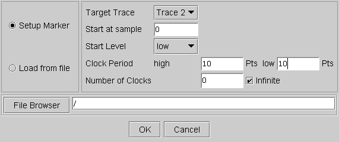

Marker Setup
This menu item accesses the Marker Setup. This tool is mainly applicable to testing LAN or other communication devices. It allows you to set up a digital marker signal, synchronized with the waveform, generated in the AWG. The marker signal can be used for trigger or synchronization purposes.

The following items can be configured:
- Start at sample
This allows you to define when the marker signal will be initiated, by defining the sample number at which it starts.
- Start level
This determines whether the marker signal starts with a low or high level.
- Clock Period high/low
This allows you to determine the duration in points over which the marker signal stays high or low.
- Number of clocks
This determines the duration of the Marker signal. Infinite means that the signal will be generated as long as the waveform is generated. If you wish to generate the marker signal only for a part of the Waveform, you must de-activate the infinite box and define a definite number of clocks. This number must be calculated according to how many clock signals fit into the section of the waveform over which you wish to generate the Marker signal. This depends also on the entries in the Clock Period boxes.